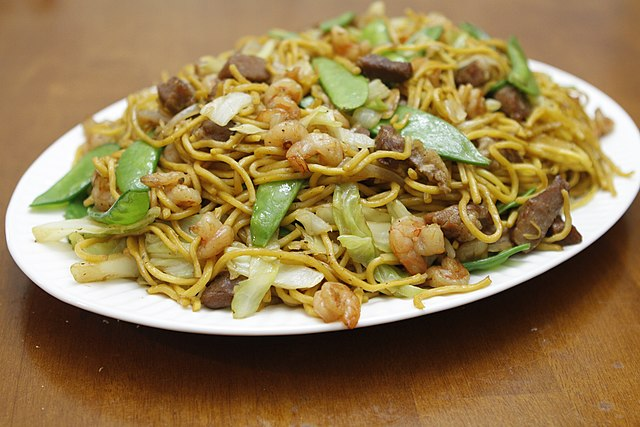

Pancit Canton

By pulaw - https://www.flickr.com/photos/pulaw/12110747826/, CC BY 2.0,
https://commons.wikimedia.org/w/index.php?curid=107372168
Description
This is a traditional tossed flour stick noodles.
A filipino favorite as a main dish or "merienda" dish.
Ingredients
- 250 grams flour stick noodles
- 4 ounces pork thinly sliced
- 1 piece Chinese sausage sliced
- 1 piece onion sliced
- 1 teaspoon garlic
- 8 to 10 pieces shrimp shell removed
- 10 to 12 pieces snap peas
- 3/4 cup carrot julienne
- 1 piece cabbage small(chopped)
- 1 1/2 cups chicken broth
- 1 tablespoons oyster sauce
- 3 tablespoons soy sauce
- 3/4 cup water
- 1 1/2 cup flat leaf parsley chopped
- 3 tablespoons cooking oil
- Salt and pepper to taste
US Customary - Metric
Steps
- Place 2 cups of ice and 3 cups water in a large bowl. Set aside.
- Boil 6 cups of water in a cooking pot.
- Once the water starts to boil, blanch the snap peas, carrots, and cabbage for 35 to 50 seconds.
Quickly
remove the vegetables and immerse in bowl with ice cold water. Drain the water after 2 minutes and set
aside.
- Heat a large wok or cooking pot and pour-in the cooking oil.
- Saute the onion and garlic.
- Add the pork and sausage slices and continue to cook for 2 minutes.
- Add-in soy sauce and oyster sauce. Stir.
- Pour-in chicken broth and water. Add salt and pepper. Let boil. continue to cook for 5 to 10 minutes.
- Put-in the shrimp and parsley. Cook for 3 minutes. Add more water if needed.
- Put-in the flour noodles. Gently toss until the noodles absorb the liquid.
- Add-in the blanched vegetables. Toss and cook for 1 to 2 minutes.
- Transfer to a serving plate. Serve.
- Share and enjoy!
Nutrition
Serving: 4g | Calories: 490kcal | Carbohydrates: 65g | Protein: 16g | Fat: 19g | Saturated Fat: 3g |
Cholesterol: 24mg | Sodium: 1502mg | Potassium: 737mg | Fiber: 8g | Sugar: 9g | Vitamin A: 4865IU | Vitamin C:
102.9mg | Calcium: 127mg | Iron: 2.5mg